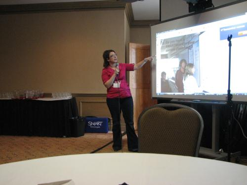

Being at the 2009 IT
Summit we were advised to take in a session and I chose to attend "Integrating SMART Boards into What You are Already Doing!"This being my first conference I was highly SMART board.
Milissa Gavel is the principle of Davison’s Elementary School in
Melville, Saskatchewan. The use of a SMARTboards in classrooms is vital in the success of her students is one of her strong beliefs.
The session was focused on two main things: when, where, and how to use a SMARTboard in a classroom; and the Senteo. One example caught my interest. The use of an overhead projector is nothing new but a simple application on the SMARTboard allows you to use a screen shade to block certain parts of the board. This is essential because when students are trying to focus on learning something and there is a distraction on the side it distracts them from the information being presented. Displaying information with the SMARTboard is faster and can be done more efficiently than the original white board. Collaborative learning is fun and seems more like a reward to the children than a daily activity and I believe this is vital in the quest for learning for children.
The other focus point of the session was the Senteo SMART technology (An interactive response system which provides a direct wireless connection between you and your students). The importance of teachers being able to access information the students need especially in “new units” or when teaching new information could make this tool key in any learning environment. We used the Seneto SMART technology as an example by finding out what percent of the listeners had a SMARTboard in their class room. 52% possessed the smart board. By a simple click of a button on a key pad the teacher could do a diagnostic test and find what percent of his or her class understands the concept and who does not.
The session in general was very interesting and entertaining. Mrs.Gavel did a great job explaining how to use the smart board and how to utilize all of its applications. Even though there were some technological problems with the SMARTboard, the session went smoothly.
